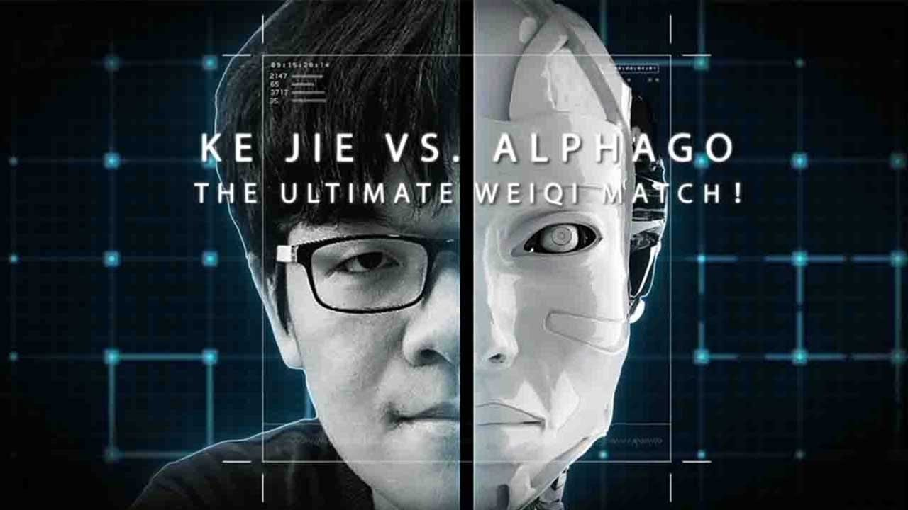
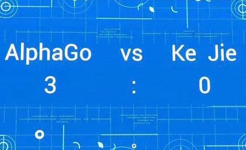
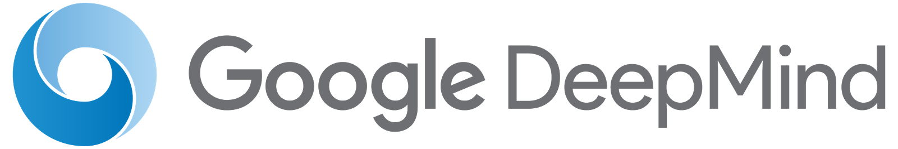

Событие, о котором здесь пойдет речь - это Саммит "Будущее Го". Напомню, что го - это традиционная китайская игра, по типу шахмат, только с другими правилами и более высоким уровнем сложности. До мая 2017 считалось, что лучшие в этой игре - люди.  23-26 мая на Саммите состоялся матч программы AlphaGo и лучшего игрока мира в го Кэ Цзея. Перед тем как объявить результат матча, я вкратце расскажу, что собой представляет AlphaGo. Данная программа разработана Google Deep Mind в 2015 году специально для игры в го. Она основана на общих принципах машинного обучения и теории самой игры. В 2015 AlphaGo выиграла у трехкратного чемпиона Европы Фань Хуэя, а в 2016 обыграла одного из лучших игроков мира Ли Седоля со счетом 4:1 по матчам. Такой успех, является следствием обучения программы на основе своих игр и игр профессионалов. Итак, в 2017 состоялся матч, о котором я говорил ранее. Его результат равен 3:0 в пользу программы от Deep Mind.  Теперь еще одна традиционная игровая дисциплина покорена ИИ. На данный момент Google Deep Mind разрабатывает нейронную сеть для программы, играющей в StarCraft (ни один ИИ не смог одержать победу над профессиональными игроками в этой игре) . В будущем команда разработчиков планирует применить опыт, полученный при написании AlphaGo, для создания системы медицинской диагностики. Мне кажется, что у Deep Mind огромные перспективы. То, что они уже создали сейчас, поражает. Я думаю через пару десятков лет, а может намного раньше, они смогут спроектировать ИИ с уровнем интеллекта равным человеческому.
